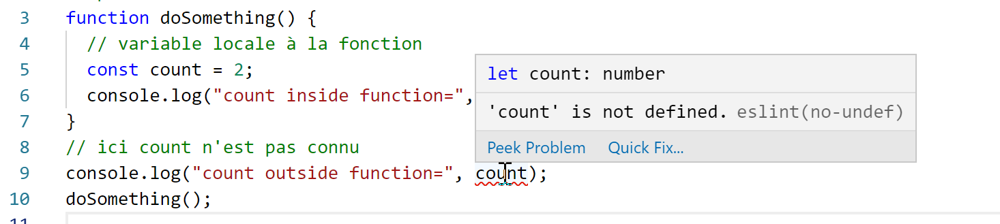

3. De basis van JavaScript
Opmerking: in het vervolg verwijst de term [Javascript] altijd naar de standaard ECMAScript 6.
Maak binnen het vorige JavaScript-project een map [bases] aan. Daarin zullen we de voorbeelden van deze paragraaf plaatsen:

3.1. script [bases-01]
Om de basis van PHP7 te introduceren, hadden we de volgende code gebruikt (zie paragraaf ‘link’):
<?php
// dit is een opmerking
// variabele die wordt gebruikt zonder te zijn gedeclareerd
$nom = "dupont";
// een schermweergave
print "nom=$nom\n";
// een array met elementen van verschillende typen
$tableau = array("un", "deux", 3, 4);
// het aantal elementen
$n = count($tableau);
// een lus
for ($i = 0; $i < $n; $i++) {
print "tableau[$i]=$tableau[$i]\n";
}
// initialisatie van 2 variabelen met de inhoud van een array
list($chaine1, $chaine2) = array("chaine1", "chaine2");
// samenvoeging van de 2 tekenreeksen
$chaine3 = $chaine1 . $chaine2;
// weergave van het resultaat
print "[$chaine1,$chaine2,$chaine3]\n";
// gebruik van een functie
affiche($chaine1);
// het type van een variabele kan bekend zijn
afficheType("n", $n);
afficheType("chaine1", $chaine1);
afficheType("tableau", $tableau);
// het type van een variabele kan tijdens de uitvoering veranderen
$n = "a changé";
afficheType("n", $n);
// een functie kan een resultaat retourneren
$res1 = f1(4);
print "res1=$res1\n";
// een functie kan een array met waarden retourneren
list($res1, $res2, $res3) = f2();
print "(res1,res2,res3)=[$res1,$res2,$res3]\n";
// deze waarden hadden in een array kunnen worden opgeslagen
$t = f2();
for ($i = 0; $i < count($t); $i++) {
print "t[$i]=$t[$i]\n";
}
// tests
for ($i = 0; $i < count($t); $i++) {
// geeft alleen de tekenreeksen weer
if (getType($t[$i]) === "string") {
print "t[$i]=$t[$i]\n";
}
}
// vergelijkingsoperatoren == en ===
if("2"==2){
print "avec l'opérateur ==, la chaîne 2 est égale à l'entier 2\n";
}else{
print "avec l'opérateur ==, la chaîne 2 n'est pas égale à l'entier 2\n";
}
if("2"===2){
print "avec l'opérateur ===, la chaîne 2 est égale à l'entier 2\n";
}
else{
print "avec l'opérateur ===, la chaîne 2 n'est pas égale à l'entier 2\n";
}
// andere tests
for ($i = 0; $i < count($t); $i++) {
// geeft alleen gehele getallen >10 weer
if (getType($t[$i]) === "integer" and $t[$i] > 10) {
print "t[$i]=$t[$i]\n";
}
}
// een while-lus
$t = [8, 5, 0, -2, 3, 4];
$i = 0;
$somme = 0;
while ($i < count($t) and $t[$i] > 0) {
print "t[$i]=$t[$i]\n";
$somme += $t[$i]; //$somme=$somme+$t[$i]
$i++; //$i=$i+1
}//terwijl
print "somme=$somme\n";
// einde programma
exit;
//----------------------------------
function affiche($chaine) {
// geeft $chaine weer
print "chaine=$chaine\n";
}
//geeft weer
//----------------------------------
function afficheType($name, $variable) {
// geeft het type weer van $variable
print "type[variable $" . $name . "]=" . getType($variable) . "\n";
}
//afficheType
//----------------------------------
function f1($param) {
// telt 10 op bij $param
return $param + 10;
}
//----------------------------------
function f2() {
// geeft 3 waarden terug
return array("un", 0, 100);
}
?>
Vertaald naar JavaScript levert dit de volgende code op:
'use strict';
// dit is een opmerking
// constante
const nom = "dupont";
// een schermweergave
console.log("nom : ", nom);
// een array met elementen van verschillende typen
const tableau = ["un", "deux", 3, 4];
// het aantal elementen
let n = tableau.length;
// een lus
for (let i = 0; i < n; i++) {
console.log("tableau[", i, "] = ", tableau[i]);
}
// initialisatie van 2 variabelen met de inhoud van een array
let [chaine1, chaine2] = ["chaine1", "chaine2"];
// samenvoeging van de 2 tekenreeksen
const chaine3 = chaine1 + chaine2;
// weergave van het resultaat
console.log([chaine1, chaine2, chaine3]);
// gebruik van een functie
affiche(chaine1);
// het type van een variabele kan bekend zijn
afficheType("n", n);
afficheType("chaine1", chaine1);
afficheType("tableau", tableau);
// het type van een variabele kan tijdens de uitvoering veranderen
n = "a changé";
afficheType("n", n);
// een functie kan een resultaat retourneren
let res1 = f1(4);
console.log("res1=", res1);
// een functie kan een array met waarden retourneren
let res2, res3;
[res1, res2, res3] = f2();
console.log("(res1,res2,res3)=", [res1, res2, res3]);
// deze waarden hadden in een array kunnen worden opgeslagen
let t = f2();
for (let i = 0; i < t.length; i++) {
console.log("t[i]=", t[i]);
}
// tests
for (let i = 0; i < t.length; i++) {
// geeft alleen de tekenreeksen weer
if (typeof (t[i]) === "string") {
console.log("t[i]=", t[i]);
}
}
// vergelijkingsoperatoren == en ===
if ("2" == 2) {
console.log("avec l'opérateur ==, la chaîne 2 est égale à l'entier 2");
} else {
console.log("avec l'opérateur ==, la chaîne 2 n'est pas égale à l'entier 2");
}
if ("2" === 2) {
console.log("avec l'opérateur ===, la chaîne 2 est égale à l'entier 2");
} else {
console.log("avec l'opérateur ===, la chaîne 2 n'est pas égale à l'entier 2");
}
// nog meer tests
for (let i = 0; i < t.length; i++) {
// geeft alleen gehele getallen >10 weer
if (typeof (t[i]) === "number" && Math.floor(t[i]) === t[i] && t[i] > 10) {
console.log("t[i]=", t[i]);
}
}
// een while-lus
t = [8, 5, 0, -2, 3, 4];
let i = 0;
let somme = 0;
while (i < t.length && t[i] > 0) {
console.log("t[i]=", t[i]);
somme += t[i];
i++;
}
console.log("somme=", somme);
// het programma stopt omdat er geen uitvoerbare code meer is
//geeft weer
//----------------------------------
function affiche(chaine) {
// geeft een tekenreeks weer
console.log("chaine=", chaine);
}
//afficheType
//----------------------------------
function afficheType(name, variable) {
// geeft het type van de variabele weer
console.log("type[variable ", name, "]=", typeof (variable));
}
//----------------------------------
function f1(param) {
// voegt 10 toe aan param
return param + 10;
}
//----------------------------------
function f2() {
// geeft 3 waarden weer
return ["un", 0, 100];
}
Laten we de verschillen tussen de codes PHP en ECMAScript 6 toelichten aan de hand van de declaratie [use strict] (regel 1):
- het eerste verschil is dat in ECMAScript de variabelen worden gedeclareerd met de volgende sleutelwoorden:
- [let] om een variabele te declareren waarvan de waarde tijdens de uitvoering van de code kan veranderen;
- [const] om een variabele te declareren waarvan de waarde tijdens de uitvoering van de code niet zal veranderen (dus een constante);
- men kan ook het sleutelwoord [var] gebruiken in plaats van [let]. Dit was het sleutelwoord dat werd gebruikt bij ECMAScript 5. We zullen het in deze cursus niet gebruiken;
- regel 6: de weergavemethode [console.log] kan allerlei soorten gegevens weergeven: tekenreeksen, getallen, booleaanse waarden, arrays en objecten. De methode PHP [print] kan arrays en objecten niet standaard weergeven. In de uitdrukking [console.log] is [console] een object en [log] een methode van dit object;
- regel 8: JavaScript-arrays zijn objecten waarnaar met een pointer wordt verwezen. Wanneer men schrijft:
const tableau = ["un", "deux", 3, 4];
is de variabele [tableau] een pointer naar de letterlijke array ["un", "deux", 3, 4]. Het wijzigen van de inhoud van de array heeft geen invloed op de pointer. Daarom wordt een array meestal gedeclareerd met het sleutelwoord [const]. In PHP wordt er niet met een pointer naar een array verwezen. Het is een letterlijke waarde;
- regel 12: de lusvariabele [i] wordt (met let) in de lus gedeclareerd. Het sleutelwoord [let] houdt zich aan het blokbereik (code tussen accolades). Daardoor is de variabele [i] uit regel 12 alleen binnen de lus bekend;
- regel 18: de operator voor het samenvoegen van tekenreeksen is de operator + in JavaScript, . in PHP. Een bijzonderheid van deze operator is dat hij voorrang heeft op de operator + voor optellen. Dus:
- in PHP levert ‘1’ + 2 het getal 3 op;
- in JavaScript levert ‘1’+2 de tekenreeks ‘12’ op;
- regel 20: [console.log] kan tabellen weergeven;
- regel 82: in JavaScript is het niet mogelijk om het type van de parameters van een functie aan te geven;
- regel 91: met de operator [typeof] kun je het type van een gegeven achterhalen. Er zijn er vier: getal, tekenreeks, booleaanse waarde en object. Merk op dat er in JavaScript geen type [integer] of type [tableau] bestaat. Zoals gezegd worden arrays via pointers beheerd en vallen ze onder de categorie objecten;
- regels 50-59: net als in PHP kent JavaScript twee vergelijkingsoperatoren, == en ‘===’, met dezelfde betekenis als in PHP. ESLint signaleert de operator == meestal als een mogelijke fout. We zullen systematisch de operator ‘===’ gebruiken;
- regel 79: we hadden de instructie [return] kunnen gebruiken, maar ESLint geeft de waarschuwing dat [return] alleen in een functie mag worden gebruikt;
Laten we deze code uitvoeren:

De resultaten van de uitvoering:
[Running] C:\myprograms\laragon-lite\bin\nodejs\node-v10\node.exe "c:\Temp\19-09-01\javascript\bases\bases-01.js"
nom : dupont
tableau[ 0 ] = un
tableau[ 1 ] = deux
tableau[ 2 ] = 3
tableau[ 3 ] = 4
[ 'chaine1', 'chaine2', 'chaine1chaine2' ]
chaine= chaine1
type[variable n ]= number
type[variable chaine1 ]= string
type[variable tableau ]= object
type[variable n ]= string
res1= 14
(res1,res2,res3)= [ 'un', 0, 100 ]
t[ 0 ]= un
t[ 1 ]= 0
t[ 2 ]= 100
t[ 0 ]= un
avec l'opérateur ==, la chaîne 2 est égale à l'entier 2
avec l'opérateur ===, la chaîne 2 n'est pas égale à l'entier 2
t[ 2 ]= 100
t[ 0 ]= 8
t[ 1 ]= 5
somme= 13
[Done] exited with code=0 in 0.316 seconds
In de geschreven code geeft ESLINT twee fouten aan:

- als je de muisaanwijzer op de rode regel van de waarschuwing plaatst, krijg je de foutmelding [3]. Hier begrijpt ESLint niet dat er twee constanten worden vergeleken. Een van de twee operanden zou een variabele moeten zijn;
- in [4] kun je met de optie [Quick Fix] de waarschuwing opheffen als je besluit de fout niet te corrigeren;

- in [5] kun je de waarschuwing uitschakelen voor de huidige regel of voor het hele bestand. We kiezen hier voor de laatste optie. De regel [6] wordt dan aan het begin van het bestand gegenereerd;
3.2. script [bases-02]
Het script [bases-02] toont het gebruik van de sleutelwoorden [let] en [const]:
'use strict';
// om een variabele te initialiseren, gebruik je let of const
// 'let' voor variabelen
let x = 4;
x++;
console.log(x);
// 'const' voor constanten
const y = 10;
x += y;
// verboden
y++;
- regel 11 veroorzaakt een fout bij de uitvoering van [1-2]. Deze fout wordt gemeld door ESLint vóór de uitvoering van [3]:

3.3. script [bases-03]
Het script [bases-03] controleert het bereik van de variabelen in JavaScript:
'use strict';
// bereik van variabelen
let count = 1;
function doSomething() {
// 'count' is hier bekend
console.log("count=",count);
}
// aanroep
doSomething();
- de variabele [count], die buiten de functie [doSomething] is gedeclareerd, is echter wel bekend in deze functie. Dit is een fundamenteel verschil met PHP;
Uitvoering
[Running] C:\myprograms\laragon-lite\bin\nodejs\node-v10\node.exe "c:\Temp\19-09-01\javascript\bases\bases-03.js"
count= 1
[Done] exited with code=0 in 0.3 seconds
3.4. script [bases-04]
Een lokale variabele overschrijft een globale variabele met dezelfde naam:
'use strict';
// bereik van variabelen
const count = 1;
function doSomething() {
// de lokale variabele overschrijft de globale variabele
const count = 2;
console.log("count inside function=",count);
}
// globale variabele
console.log("count outside function=",count);
// lokale variabele
doSomething();
Uitvoering
[Running] C:\myprograms\laragon-lite\bin\nodejs\node-v10\node.exe "c:\Temp\19-09-01\javascript\bases\bases-04.js"
count outside function= 1
count inside function= 2
[Done] exited with code=0 in 0.246 seconds
3.5. script [bases-05]
Een variabele die in een functie is gedefinieerd, is buiten die functie niet bekend:
'use strict';
// bereik van variabelen
function doSomething() {
// lokale variabele binnen de functie
const count = 2;
console.log("count inside function=", count);
}
// hier is count niet bekend
console.log("count outside function=", count);
doSomething();
ESLint meldt een fout op regel 9:

3.6. script [bases-06]
De sleutelwoorden [let] en [const] definiëren variabelen met het bereik [bloc] (code tussen accolades), maar het sleutelwoord [var] niet:
'use strict';
// met het sleutelwoord [let] kan een variabele met blokbereik worden gedefinieerd
{
// de variabele [count] is alleen in dit blok bekend
let count = 1;
console.log("count=", count);
}
// hier is de variabele [count] niet bekend
count++;
// met het sleutelwoord [const] kan een variabele met blokbereik worden gedefinieerd
{
// de variabele [count2] is alleen in dit blok bekend
const count2 = 1;
console.log("count=", count2);
}
// hier is de variabele [count2] niet bekend
count2++;
// met het sleutelwoord [var] kan geen variabele met blokbereik worden gedefinieerd
{
// de variabele [count3] zal globaal bekend zijn
var count3 = 1;
console.log("count=", count3);
}
// hier is de variabele [count3] bekend
count3++;
Opmerkingen
- regel 5: de variabele [count] is alleen bekend binnen het codeblok waarin deze is gedeclareerd (regels 3-7);
- regel 14: de constante [count2] is alleen bekend binnen het codeblok waarin deze is gedeclareerd (regels 12-16);
- regel 23: de variabele [count3] is bekend buiten het codeblok waarin deze is gedeclareerd (regels 21-25);
ESLint meldt de volgende fouten:

Omwille van deze blokbereikredenen zullen we hierna alleen de sleutelwoorden [let] en [const] gebruiken.
3.7. script [bases-07]
Gegevenstypen in JavaScript:
''use strict';
// gegevenstype jS
const var1 = 10;
const var2 = "abc";
const var3 = true;
const var4 = [1, 2, 3];
const var5 = {
nom: 'axèle'
};
const var6 = function () {
return +3;
}
// weergave van de typen
console.log("typeof(var1)=", typeof (var1));
console.log("typeof(var2)=", typeof (var2));
console.log("typeof(var3)=", typeof (var3));
console.log("typeof(var4)=", typeof (var4));
console.log("typeof(var5)=", typeof (var5));
console.log("typeof(var6)=", typeof (var6));
Uitvoering
[Running] C:\myprograms\laragon-lite\bin\nodejs\node-v10\node.exe "c:\Temp\19-09-01\javascript\bases\bases-07.js"
typeof(var1)= number
typeof(var2)= string
typeof(var3)= boolean
typeof(var4)= object
typeof(var5)= object
typeof(var6)= function
[Done] exited with code=0 in 0.26 seconds
Opmerkingen
- regel 7 (code): een array is een object. Als zodanig is [var4] een pointer naar de array, niet de array zelf;
- regel 8 (code): [var5] is een pointer naar een letterlijk object. We zullen zien dat letterlijke objecten in JavaScript sterk lijken op de klasse-instanties van PHP. Ook hiernaar wordt verwezen via pointers;
- regel 11 (code): een variabele kan van het type [fonction] zijn (regel 7 van de resultaten);
3.8. script [bases-08]
Dit script toont de mogelijke typewijzigingen in JavaScript.
'use strict';
// impliciete typeconversies
// type --> bool
console.log("---------------[Conversion implicite vers un booléen]------------------------------");
showBool("abcd");
showBool("");
showBool([1, 2, 3]);
showBool([]);
showBool(null);
showBool(0.0);
showBool(0);
showBool(4.6);
showBool({});
showBool(undefined);
function showBool(data) {
// de conversie van data naar booleaanse waarde gebeurt automatisch in de volgende test
console.log("[data=", data, "], [type(data)]=", typeof (data), "[valeur booléenne(data)]=", data ? true : false);
}
// impliciete typeconversies naar een numeriek type
console.log("---------------[Conversion implicite vers un nombre]------------------------------");
showNumber("12");
showNumber("45.67");
showNumber("abcd");
function showNumber(data) {
// data + 1 werkt niet, omdat jS dan een tekenreeksconcatenatie uitvoert in plaats van een optelling
const nombre = data * 1;
console.log("[data=", data, "], [type(data)]=", typeof (data), "[nombre]=", nombre, "[type(nombre)]=", typeof (nombre));
}
// expliciete typeconversies naar een booleaanse waarde
console.log("---------------[Conversion explicite vers un booléen]------------------------------");
showBool2("abcd");
showBool2("");
showBool2([1, 2, 3]);
showBool2([]);
showBool2(null);
showBool2(0.0);
showBool2(0);
showBool2(4.6);
showBool2({});
showBool2(undefined);
function showBool2(data) {
// de conversie van data naar booleaanse waarde gebeurt expliciet in de daaropvolgende test
console.log("[", data, "], [type(data)]=", typeof (data), "[valeur booléenne(data)]=", Boolean(data));
}
// expliciete typeconversies naar Number
console.log("---------------[Conversion explicite vers un nombre]------------------------------");
showNumber2("12.45");
showNumber2(67.8);
showNumber2(true);
showNumber2(null);
function showNumber2(data) {
const nombre = Number(data);
console.log("[data=", data, "], [type(data)]=", typeof (data), "[nombre]=", nombre, "[type(nombre)]=", typeof (nombre));
}
// naar String
console.log("---------------[Conversion explicite vers un string]------------------------------");
showString(5);
showString(6.7);
showString(false);
showString(null);
function showString(data) {
const chaîne = String(data);
console.log("[data=", data, "], [type(data)]=", typeof (data), "[chaîne]=", chaîne, "[type(chaîne)]=", typeof (chaîne));
}
// enkele onverwachte impliciete conversies
console.log("---------------[Autres cas]------------------------------");
const string1 = '1000.78';
// standaard samenvoeging van tekenreeksen
const data1 = string1 + 1.034;
console.log("data1=", data1, "type=", typeof (data1));
const data2 = 1.034 + string1;
console.log("data2=", data2, "type=", typeof (data2));
// expliciete conversie naar getal
const data3 = Number(string1) + 1.034;
console.log("data3=", data3, "type=", typeof (data3));
// true wordt geconverteerd naar het getal 1
const data4 = true * 1.18;
console.log("data4=", data4, "type=", typeof (data4));
// false wordt geconverteerd naar het getal 0
const data5 = false * 1.18;
console.log("data5=", data5, "type=", typeof (data5));
Uitvoering
[Running] C:\myprograms\laragon-lite\bin\nodejs\node-v10\node.exe "c:\Data\st-2019\dev\es6\javascript\bases\bases-08.js"
---------------[Conversion implicite vers un booléen]------------------------------
[data= abcd ], [type(data)]= string [valeur booléenne(data)]= true
[data= ], [type(data)]= string [valeur booléenne(data)]= false
[data= [ 1, 2, 3 ] ], [type(data)]= object [valeur booléenne(data)]= true
[data= [] ], [type(data)]= object [valeur booléenne(data)]= true
[data= null ], [type(data)]= object [valeur booléenne(data)]= false
[data= 0 ], [type(data)]= number [valeur booléenne(data)]= false
[data= 0 ], [type(data)]= number [valeur booléenne(data)]= false
[data= 4.6 ], [type(data)]= number [valeur booléenne(data)]= true
[data= {} ], [type(data)]= object [valeur booléenne(data)]= true
[data= undefined ], [type(data)]= undefined [valeur booléenne(data)]= false
---------------[Conversion implicite vers un nombre]------------------------------
[data= 12 ], [type(data)]= string [nombre]= 12 [type(nombre)]= number
[data= 45.67 ], [type(data)]= string [nombre]= 45.67 [type(nombre)]= number
[data= abcd ], [type(data)]= string [nombre]= NaN [type(nombre)]= number
---------------[Conversion explicite vers un booléen]------------------------------
[ abcd ], [type(data)]= string [valeur booléenne(data)]= true
[ ], [type(data)]= string [valeur booléenne(data)]= false
[ [ 1, 2, 3 ] ], [type(data)]= object [valeur booléenne(data)]= true
[ [] ], [type(data)]= object [valeur booléenne(data)]= true
[ null ], [type(data)]= object [valeur booléenne(data)]= false
[ 0 ], [type(data)]= number [valeur booléenne(data)]= false
[ 0 ], [type(data)]= number [valeur booléenne(data)]= false
[ 4.6 ], [type(data)]= number [valeur booléenne(data)]= true
[ {} ], [type(data)]= object [valeur booléenne(data)]= true
[ undefined ], [type(data)]= undefined [valeur booléenne(data)]= false
---------------[Conversion explicite vers un nombre]------------------------------
[data= 12.45 ], [type(data)]= string [nombre]= 12.45 [type(nombre)]= number
[data= 67.8 ], [type(data)]= number [nombre]= 67.8 [type(nombre)]= number
[data= true ], [type(data)]= boolean [nombre]= 1 [type(nombre)]= number
[data= null ], [type(data)]= object [nombre]= 0 [type(nombre)]= number
---------------[Conversion explicite vers un string]------------------------------
[data= 5 ], [type(data)]= number [chaîne]= 5 [type(chaîne)]= string
[data= 6.7 ], [type(data)]= number [chaîne]= 6.7 [type(chaîne)]= string
[data= false ], [type(data)]= boolean [chaîne]= false [type(chaîne)]= string
[data= null ], [type(data)]= object [chaîne]= null [type(chaîne)]= string
---------------[Autres cas]------------------------------
data1= 1000.781.034 type= string
data2= 1.0341000.78 type= string
data3= 1001.814 type= number
data4= 1.18 type= number
data5= 0 type= number